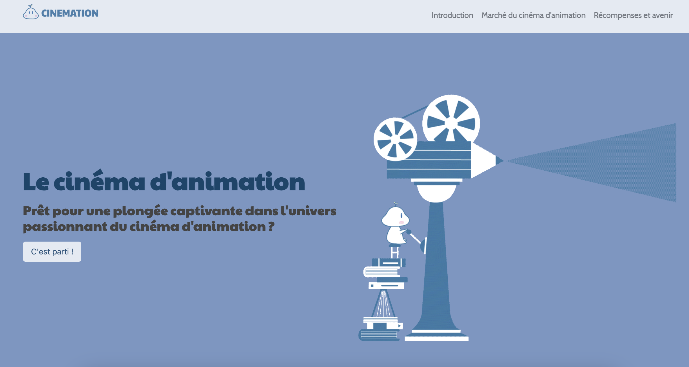

CINEMATION est un projet universitaire consacré au cinéma d'animation. L'objectif était de concevoir un site one-page réunissant des contenus informatifs et des visualisations autour de cet univers.
Le brief prévoyait notamment l'intégration de graphiques interactifs à l'aide de bibliothèques JavaScript telles que Chart.js ou Plotly, ainsi que la création de représentations visuelles en motion design.
Le site aborde plusieurs aspects du cinéma d'animation : les techniques, les studios, les films, les recettes au box-office et les récompenses.

Page d'accueil du site CINEMATION.